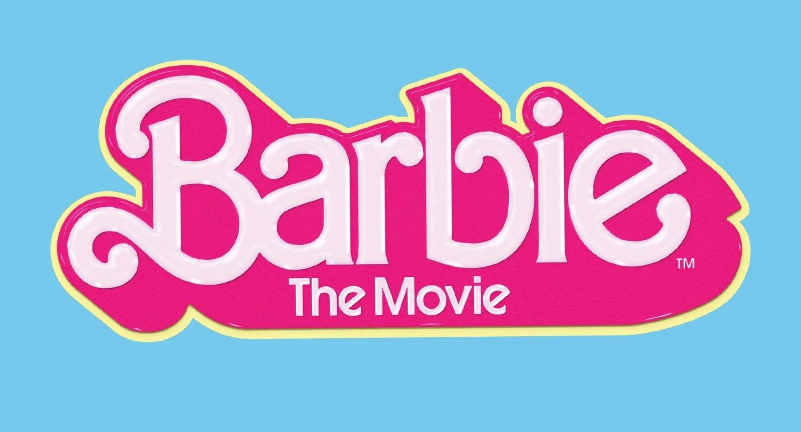
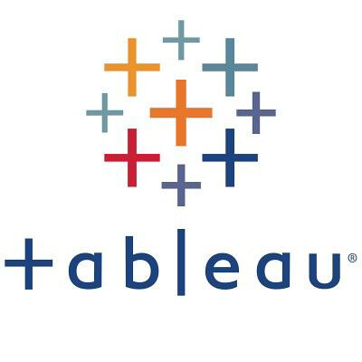

A Detail-oriented data analyst with a strong analytical mindset. Proficient in data manipulation and visualization.
Google Data Analytics Professional Certificate and Python Programming for Data Science NanoDegree holder, seeking to apply insights for optimizing real-world challenges.
Why Data Analysis?
Ever since my early fascination with the tales of Sherlock Holmes, I've been captivated by the art of problem-solving and the intrigue of unveiling hidden stories. Much like a detective seeks truth, data analysis enables me to uncover the narratives woven within information.
With a background fortified by my Google Data Analytics certification, proficiency in Python Programming for Data Science, and my Computer Science degree, I'm on a mission to tackle complex challenges and translate data into actionable strategies.
Fueling Curiousity:
My curiousity and the hunger for wanting to learn more and improve myself has always driven me to seek further opportunities and hone my everyday skills.
I'm not just a data analyst; I'm a lifelong learner and problem solver. From leading teams in the Entrepreneurship and Engineering Training Program to honing my English proficiency through the AMIDEAST Access Microscholarship, I'm constantly evolving both personally and professionally.

Explore the Cinematic Journey of Barbie: Delve into the world of data analysis with this Python-powered project, meticulously crafted with Pandas and NumPy.
Gain insights into the global box office performance of the Barbie movie and understand IMDb viewer sentiments. Uncover revenue trends across countries and discover audience emotions through sentiment analysis. This project offers dynamic visualizations and precise analytics, serving as a valuable resource for comprehending the worldwide impact of Barbie on the big screen.

Embark with me on Journey to BarbieLand through Interactive Visuals. Experience the global box office triumph of the Barbie movie like never before with this Tableau data visualization project. Seamlessly integrating with the Python-powered data analysis, this project offers an immersive and intuitive exploration of Barbie's cinematic journey.
Navigate through dynamic charts, maps, and trends that vividly showcase revenue trends across countries and viewer sentiments from IMDb reviews. Whether you're captivated by revenue insights or the emotional resonance of the movie, this Tableau visualization provides an engaging and comprehensive perspective on Barbie's worldwide impact.

Discover meaningful insights from bikeshare data with this interactive program. Developed using Python, Pandas, and NumPy, the program allows users to explore and analyze bikeshare data from Chicago, New York City, and Washington.
Users can filter data by city, month, and day of the week to uncover trends in popular travel times, stations, trip durations, and user demographics. The tool provides dynamic visualizations and statistics, making it an essential asset for understanding urban biking patterns.
Explore the evolving landscape of the COVID-19 pandemic through comprehensive data analysis and visualizations. Leveraging SQL queries, this project dives deep into COVID-19 datasets,
uncovering insights on infection rates, vaccination progress, and case fatality rates. From daily global numbers to continent-specific trends, the analyses provide a holistic understanding of the pandemic's impact.

Experience the dynamic journey of the COVID-19 pandemic through an immersive Tableau data visualization dashboard. This project translates complex data into captivating visuals, allowing you to explore key pandemic metrics with ease.
Navigate infection rates, vaccination progress, and case fatality rates through interactive charts, maps, and trends. Whether you're examining global numbers, analyzing continent-specific insights, or delving into country-level data, this dashboard provides an intuitive platform to uncover trends, patterns, and correlations.
Explore the realm of film rentals with my Sakila DVD Rental Database project. Delve into SQL queries to unveil movie trends,
customer behavior, and store performance, all presented through a comprehensive analysis. Experience the power of data-driven insights within the entertainment industry, accompanied by interactive visualizations and engaging findings.